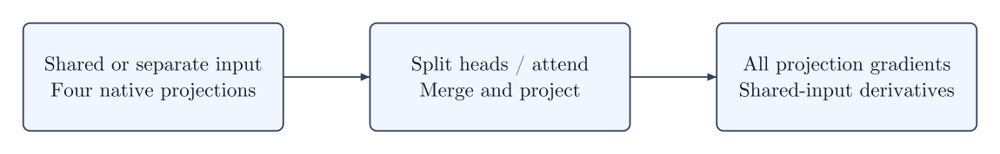
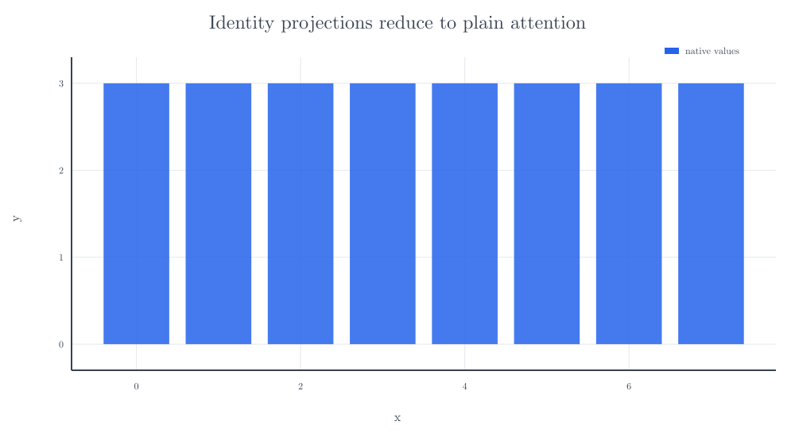
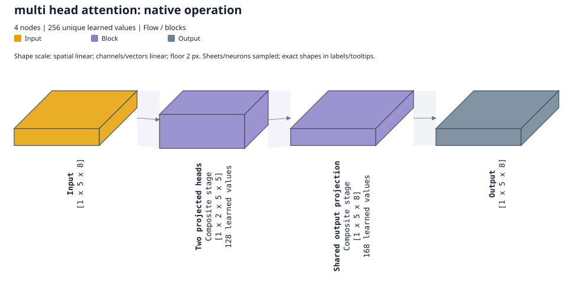

Multi-Head Attention: Shared Inputs and Projection Gradients
Abstract
Native tensor graphs expose the multi head attention experiment, with explicit inputs, derivatives and reproducible source fixtures. The complete editable program preserves the bounded source protocol and its checks.
Follow the operation
#include <dm/dm.hpp>
int main(){std::filesystem::create_directories("build");dm::graphics::Diagram d(28,1150);dm::graphics::DiagramNodeStyle s;s.width=12;s.height=5;s.font_size=26;d.node("input",{-16,0},"Shared or separate input\nFour native projections",s).node("graph",{0,0},"Split heads / attend\nMerge and project",s).node("audit",{16,0},"All projection gradients\nShared-input derivatives",s).edge("input","graph").edge("graph","audit").save_svg("build/multi_head_attention_method.svg");}
Identity projections reduce to plain attention
One head and identity query/key/value/output projections preserve the plain-attention calculation. The two scalar-valued tokens2 and4 share zero query logits, so each output coordinate becomes3.
#include <dm/dm.hpp>
int main(){namespace n=dm::nn;namespace m=n::models;std::filesystem::create_directories("build");n::ParameterStore p(1);auto query=n::zeros({1,1,8}),kv=n::concat({n::full({1,1,8},2),n::full({1,1,8},4)},1);n::MultiHeadOptions o;o.impl=n::AttentionImpl::Plain;o.need_weights=true;n::multi_head_attention(p,"mha",query,kv,1,o);for(auto& key:p.names())p.set(key,n::eye(8));auto path=n::multi_head_attention(p,"mha",query,kv,1,o);auto values=path.output.reshape({8});if(n::max(n::abs(values-3.)).item()>1e-6)return 1;
std::print("| coordinate | computed value |\n|---:|---:|\n");auto v=values.to_vector<double>();for(size_t i=0;i<v.size();++i)std::print("| {} | {:.9f} |\n",i,v[i]);n::save_npz("build/multi_head_attention_worked.npz",{{"values",values}});dm::graphics::RPlot::create().bars(n::arange(0,std::int64_t(v.size())).to_vector<double>(),v,"native values",{37,99,235}).title("Identity projections reduce to plain attention").size(1000,550).save_svg("build/multi_head_attention_worked.svg");}| coordinate | computed value |
|---|---|
| 0 | 3.000000000 |
| 1 | 3.000000000 |
| 2 | 3.000000000 |
| 3 | 3.000000000 |
| 4 | 3.000000000 |
| 5 | 3.000000000 |
| 6 | 3.000000000 |
| 7 | 3.000000000 |

Trace an executed native operation
The block graph is traced from the actual operation below. Named stages mark its semantic endpoints; the complete program supplies the source geometry and parameter census.
#include <dm/dm.hpp>
int main(){namespace n=dm::nn;namespace m=n::models;std::filesystem::create_directories("build");n::ParameterStore p(1);n::Module model([&](const n::Tensor& x){n::MultiHeadOptions o;o.need_weights=true;o.impl=n::AttentionImpl::Plain;auto y=n::multi_head_attention(p,"mha",x,x,2,o);n::model_stage("Two projected heads",x,y.weights);return n::model_stage("Shared output projection",y.weights,y.output);},"multi head attention: native operation");n::ModelPlotOptions o;o.detail=n::ModelPlotDetail::Blocks;o.sizing.minimum_extent=2;o.sizing.max_planes=2;model.plot(n::zeros({1,5,8}),o).save_svg("build/multi_head_attention_network.svg");}
Complete preserved experiment
All mathematical components run natively. Optional TensorFlow recordings are absent; their comparisons are skipped rather than asserted. The source random seeds, parameter names and fixed three-epoch budgets remain visible. Diagnostics without fitting use their original fixed inputs. This is a teaching experiment, not a benchmark parity claim.
#include <dm/dm.hpp>
// CMD: just run-nn multi_head_attention
// Multi-head attention with projection and shared-input derivatives.
//
// Port of tflow's multi_head_attention. Four cases of the bias-free layer
// concat_h(softmax(Q_h K_h^T / sqrt(dh)) V_h) Wo with d_model 8: cross
// attention with two heads, the same with a causal + padding validity mask
// (one example has no valid key), self attention with four heads (the shared
// input's gradient sums the query, key and value paths), and one head with
// identity projections, which must equal plain scaled dot-product attention.
// The objective sum(output * probe) is differentiated with respect to all
// four projections and the inputs; 3 coordinates of each projection and 6 of
// each input are checked against float32 central differences (< 2e-3, as in
// TF). The layer has 4 x 8 x 8 = 256 parameters, and invalid model/head
// sizes are rejected.
//
// Weights: init=auto (default) replays the projections TF saved in its
// fixtures (tflow's output/models/multi_head_attention/<case>.npz, arrays
// mha/Wq ...) when they exist, init=tf requires them, init=nn draws them from
// nn's generator with TF's distribution U(+-sqrt(3/d_model)). The inputs come
// from TF's std::mt19937 streams, so with TF's weights every output and
// gradient is compared with TF's (must agree to 1e-5).
//
// TF -> datamunge: nn::MultiHeadAttention is attn::MultiHeadAttention
// (common/attention.hpp; explicit d_model and its guard as in tflow) over
// nn::multi_head_attention, whose parameters have tflow's names and layout.
//
// Options: out=DIR (default output/nn/multi_head_attention), tf=DIR,
// init=auto|tf|nn, verbose=1.
// Editable experiment support: attention.hpp
// Attention helpers for the 5.x example ports (port of the parts of tflow's
// common/nn/attention.h that datamunge/nn/attention.hpp does not already
// provide), plus the small harness the 5.1 attention-fundamentals examples
// share: tflow's random input streams, float32 central differences and the
// comparison against the .npz fixtures the TF examples write.
//
// tflow -> datamunge:
// nn::ScaledDotProductAttention(s, q, k, v, d, mask, allowed)
// -> nn::scaled_dot_product_attention(q, k, v, mask) (scale 1/sqrt(q.size(-1)),
// weights returned; `mask` is either an additive float bias or a bool keep mask)
// nn::MultiHeadAttention(s, p, name, xq, xkv, d_model, heads, mask, allowed)
// -> nn::multi_head_attention(store, name, xq, xkv, heads, options)
// nn::AttentionAllowed(s, key_lengths, query_lengths, queries, keys, causal, offset)
// -> attn::AttentionAllowed below (the library's causal_keep_mask is aligned
// bottom-right instead of taking an explicit query offset, and its
// padding_keep_mask masks keys only).
namespace attn {
namespace nn = datamunge::nn;
/// tflow's AttentionAllowed: bool [N, queries, keys], true where query t is
/// valid (t < query_lengths[n]), key j is valid (j < key_lengths[n]) and, when
/// `causal`, j <= t + query_offset (queries sit after `query_offset` cached
/// keys during incremental decoding). Lengths are integer tensors [N]. Add a
/// head axis (expand_dims(.., 1)) for [N, heads, Tq, Tk] scores.
inline nn::Tensor AttentionAllowed(const nn::Tensor& key_lengths, const nn::Tensor& query_lengths, std::int64_t queries,
std::int64_t keys, bool causal = false, std::int64_t query_offset = 0) {
return nn::models::AttentionAllowed(key_lengths,query_lengths,queries,keys,causal,query_offset);
}
/// tflow's ScaledDotProductAttention(q, k, v, d, mask): scores scaled by
/// 1/sqrt(d), plain (weight-materialising) path, weights returned. `mask` is an
/// additive float bias or a bool keep mask (tflow's `allowed`); rows with no
/// allowed key give zero weights and output.
inline nn::Attended ScaledDotProductAttention(const nn::Tensor& q, const nn::Tensor& k, const nn::Tensor& v,
std::int64_t d, const nn::Tensor& mask = nn::Tensor()) {
if (d < 1) throw std::invalid_argument("attention key width must be positive");
nn::AttentionOptions o;
o.mask = mask;
o.scale = 1.0 / std::sqrt(static_cast<double>(d));
o.need_weights = true;
o.impl = nn::AttentionImpl::Plain;
return nn::scaled_dot_product_attention(q, k, v, o);
}
/// tflow's MultiHeadAttention(p, name, x_q, x_kv, d_model, heads, mask,
/// allowed): bias-free projections "<name>/Wq|Wk|Wv|Wo" [d_model, d_model]
/// (U(+-sqrt(3/d_model))), weights [N, heads, Tq, Tk] returned. `mask`: keep or
/// additive, broadcastable to [N, heads, Tq, Tk]. d_model is explicit, as in tflow,
/// and checked against the input width.
inline nn::Attended MultiHeadAttention(nn::ParameterStore& store, const std::string& name, const nn::Tensor& x_q,
const nn::Tensor& x_kv, std::int64_t d_model, std::int64_t heads,
const nn::Tensor& mask = nn::Tensor()) {
if (d_model < 1 || heads < 1 || d_model % heads != 0)
throw std::invalid_argument("positive model/head counts and divisible head width required");
if (x_q.dim() != 3 || x_q.size(2) != d_model || x_kv.dim() != 3 || x_kv.size(2) != d_model)
throw std::invalid_argument("multi-head inputs must be [N, T, d_model]");
nn::MultiHeadOptions o;
o.mask = mask;
o.need_weights = true;
o.impl = nn::AttentionImpl::Plain;
return nn::multi_head_attention(store, name, x_q, x_kv, heads, o);
}
/// Initializer that returns a fixed array (replays weights saved by TF).
inline nn::Initializer FixedInit(const nn::Tensor& value) {
return [value](const nn::Shape& shape, nn::DType, nn::Generator&) {
if (shape != value.shape()) throw std::invalid_argument("saved weight has the wrong shape");
return value.clone();
};
}
/// Integer vector tensor.
inline nn::Tensor Ints(const std::vector<int>& values) {
return nn::from_vector(values, {static_cast<std::int64_t>(values.size())});
}
/// tflow's `random` lambdas: float32 tensors filled with scale * N(0, 1) drawn
/// from one std::mt19937 and ONE std::normal_distribution<float> (it caches
/// the second value of each pair, so a fresh distribution per tensor would
/// diverge after an odd-sized tensor). With the same seed and the same
/// standard library (both builds use libc++ here) the values equal TF's.
struct TfRandom {
explicit TfRandom(unsigned seed) : rng(seed) {}
nn::Tensor operator()(const nn::Shape& shape, float scale = 1.f) {
nn::Tensor t = nn::empty(shape);
float* p = t.data_ptr<float>();
for (std::int64_t i = 0; i < t.numel(); ++i) p[i] = scale * normal(rng);
return t;
}
std::mt19937 rng;
std::normal_distribution<float> normal{0, 1};
};
/// Max |a - b| (inf on a shape mismatch).
inline double MaxAbsDiff(const nn::Tensor& a, const nn::Tensor& b) {
if (a.shape() != b.shape()) return INFINITY;
const auto x = nn::cast(a, nn::DType::Float64).to_vector<double>();
const auto y = nn::cast(b, nn::DType::Float64).to_vector<double>();
double m = 0;
for (std::size_t i = 0; i < x.size(); ++i) m = std::max(m, std::abs(x[i] - y[i]));
return m;
}
/// tflow's native finite-difference probe: for `samples` coordinates spread
/// evenly over `value` (i * (numel - 1) / (samples - 1)), compares the float32
/// central difference (f(x + h) - f(x - h)) / 2h, h = 0.002, with the analytic
/// gradient. `value` is modified in place and restored. Returns the max error.
inline double CentralDifferenceError(nn::Tensor& value, const nn::Tensor& gradient, int samples,
const std::function<float()>& objective, int* count = nullptr) {
float* p = value.data_ptr<float>();
const auto g = gradient.to_vector<float>();
double error = 0;
for (int i = 0; i < samples; ++i) {
const std::int64_t c = samples == 1 ? 0 : i * (value.numel() - 1) / (samples - 1);
const float old = p[c];
p[c] = old + .002f;
const float plus = objective();
p[c] = old - .002f;
const float minus = objective();
p[c] = old;
error = std::max(error, std::abs((plus - minus) / .004 - g[c]));
if (count) ++*count;
}
return error;
}
/// Reads one array of an .npz archive (throws when missing).
inline nn::Tensor Named(const nn::NamedTensors& arrays, const std::string& name) {
for (const auto& [key, value] : arrays)
if (key == name) return value;
throw std::runtime_error("npz has no array '" + name + "'");
}
inline bool Has(const nn::NamedTensors& arrays, const std::string& name) {
for (const auto& [key, value] : arrays)
if (key == name) return true;
return false;
}
/// Default location of the TF example's fixtures: tflow's output/models/<name>.
inline std::filesystem::path DefaultTfDir(const std::string& name) {
const char* home = std::getenv("HOME");
return std::filesystem::path(home ? home : ".") / "projects" / "tflow_examples" / "output" / "models" / name;
}
/// Compares every array of `ours` that TF also saved (same key) with TF's
/// .npz `tf_file`. Returns the largest difference over the arrays whose names
/// pass `include` (all by default), or -1 when the file is missing. Prints one
/// line per compared array when `verbose`.
inline double CompareWithTf(const std::filesystem::path& tf_file, const nn::NamedTensors& ours, bool verbose = false,
const std::function<bool(const std::string&)>& include = {}) {
if (!std::filesystem::exists(tf_file)) return -1;
const auto ref = nn::load_npz(tf_file.string());
double worst = 0;
for (const auto& [name, value] : ours) {
if (!Has(ref, name) || (include && !include(name))) continue;
const double d = MaxAbsDiff(value, Named(ref, name));
if (verbose) std::printf(" %-22s max |ours - TF| = %.2e\n", name.c_str(), d);
worst = std::max(worst, d);
}
return worst;
}
/// Compares `ours` with TF's fixture `file` under `tf_dir`. When the arrays
/// listed in `inputs` are bit-identical to TF's (same random streams), every
/// other shared array except the finite-difference metadata ("metadata",
/// "native_fd") must agree within `tolerance` (a failed check throws). Returns
/// the max difference, or -1 when the fixture is missing or the inputs differ.
inline double CheckAgainstTf(const std::filesystem::path& tf_dir, const std::string& file, const nn::NamedTensors& ours,
const std::vector<std::string>& inputs, double tolerance, bool verbose = false) {
const auto path = tf_dir / file;
if (!std::filesystem::exists(path)) {
std::printf(" (TF fixture %s not found: TF comparison skipped)\n", path.string().c_str());
return -1;
}
auto is_input = [&](const std::string& n) { return std::find(inputs.begin(), inputs.end(), n) != inputs.end(); };
const double din = CompareWithTf(path, ours, false, is_input);
if (din != 0) {
std::printf(" (inputs differ from TF's %s by %.2e: different random stream, outputs not compared)\n",
file.c_str(), din);
return -1;
}
const double d = CompareWithTf(path, ours, verbose, [&](const std::string& n) {
return !is_input(n) && n != "metadata" && n != "native_fd";
});
std::printf(" vs TF %s (identical inputs): max |ours - TF| = %.2e over all outputs and gradients\n", file.c_str(), d);
if (!(d <= tolerance))
throw std::runtime_error(file + ": outputs differ from TF's by " + std::to_string(d) + " > " +
std::to_string(tolerance));
return d;
}
/// key=value options shared by the 5.1 examples: out=DIR (default
/// output/nn/<name>), tf=DIR (TF fixtures, default tflow's output/models/<name>),
/// init=auto|tf|nn for examples with learned weights (auto: TF's saved
/// weights when present), verbose=0|1 (per-array TF comparison).
struct Options {
std::filesystem::path out, tf;
std::string init{"auto"};
bool verbose{false};
};
inline Options ParseOptions(int argc, char** argv, const std::string& name,
const std::filesystem::path& out_default) {
Options o;
o.out = out_default;
o.tf = DefaultTfDir(name);
for (int i = 1; i < argc; ++i) {
const std::string a = argv[i];
const auto e = a.find('=');
if (e == std::string::npos) throw std::invalid_argument("expected key=value option, got " + a);
const std::string key = a.substr(0, e), value = a.substr(e + 1);
if (key == "out") o.out = value;
else if (key == "tf") o.tf = value;
else if (key == "init") o.init = value;
else if (key == "verbose") o.verbose = value != "0";
else throw std::invalid_argument("unknown option " + key + " (out=, tf=, init=, verbose=)");
}
if (o.init != "auto" && o.init != "tf" && o.init != "nn") throw std::invalid_argument("init must be auto, tf or nn");
std::filesystem::create_directories(o.out);
return o;
}
} // namespace attn
// Editable experiment support: checks.hpp
// Small runtime checks used by the executable nn examples. They stay on in
// Release builds and make the example exit nonzero on failure, so `just
// run-all-nn` doubles as a regression test against the recorded TF numbers.
// Editable experiment support: runtime.hpp
// Bounded demonstrations by default; opt into convergence experiments explicitly.
namespace example_runtime {
inline bool Full() {
const char* value = std::getenv("DATAMUNGE_EXAMPLES_FULL");
return value && std::string(value) == "1";
}
template <typename T> T Limit(T requested, T quick_limit) {
return Full() ? requested : std::min(requested, quick_limit);
}
inline void Describe() {
if (!Full())
std::cout << "Quick demonstration: bounded training; convergence metrics require "
"DATAMUNGE_EXAMPLES_FULL=1.\n";
}
} // namespace example_runtime
namespace check {
inline void Require(bool condition, const std::string& message) {
if (!condition) throw std::runtime_error(message);
}
// A short demonstration checks execution, derivatives and persistence; reaching
// a published accuracy/return requires the separately requested full schedule.
inline void TrainingQuality(bool condition, const std::string& message) {
if (example_runtime::Full()) Require(condition, message);
else std::cout << " full-training quality check deferred: " << message << '\n';
}
inline void Near(double actual, double expected, double tolerance, const std::string& message) {
if (!std::isfinite(actual) || !std::isfinite(expected) || std::abs(actual - expected) > tolerance)
throw std::runtime_error(message + ": got " + std::to_string(actual) + ", expected " + std::to_string(expected));
}
/// Expects `f` to throw; returns the message.
template <typename F>
std::string Throws(F&& f, const std::string& message) {
try {
f();
} catch (const std::exception& e) {
return e.what();
}
throw std::runtime_error(message + ": expected an exception");
}
} // namespace check
inline void Header(const std::string& title) {
const std::size_t pad = title.size() < 60 ? 60 - title.size() : 0;
std::cout << "\n== " << title << " " << std::string(pad, '=') << "\n";
}
// Editable experiment support: paths.hpp
// Where the nn example ports read datasets and write their outputs.
//
// Datasets: $DATAMUNGE_DATA_DIR, or the user's cache. Public datasets are
// prepared by the example data loaders when first needed.
// Outputs (checkpoints, histories, fixtures): $DATAMUNGE_OUTPUT_DIR, or
// output/nn relative to the working directory (`just run-nn` runs from the
// repository root). Both are created on demand by the caller.
// Editable experiment support: dataset_assets.hpp
namespace dataset_assets {
inline std::string DataRoot(){return dm::datasets::data_home();}
inline void EnsureSaliency(const std::string& directory){dm::datasets::prepare_example_data("mnist-assets",std::filesystem::path(directory).parent_path().string());}
inline dm::nn::ImageDataset LoadCifar10(const std::string& directory,const std::string& split){dm::datasets::fetch("cifar10",directory);return dm::nn::load_cifar10(directory,split);}
}
namespace paths {
inline std::filesystem::path DataRoot() {
return dm::datasets::data_home();
}
/// DataRoot() / name, e.g. Dataset("mnist").
inline std::filesystem::path Dataset(const std::string& name) { return DataRoot() / name; }
inline std::filesystem::path OutputRoot() {
return std::filesystem::absolute("build/generative-models");
}
/// OutputRoot() / relative, created as a directory.
inline std::filesystem::path OutputDir(const std::string& relative) {
auto dir = OutputRoot() / relative;
std::filesystem::create_directories(dir);
return dir;
}
} // namespace paths
namespace nn = datamunge::nn;
using nn::Tensor;
namespace {
void Run(const attn::Options& opt, const std::string& name, int heads, bool self, bool strict, bool identity,
unsigned seed) {
const std::int64_t tq = self ? 4 : 3, tk = self ? 4 : 5;
nn::ParameterStore store(seed);
attn::TfRandom random(seed);
Tensor xq = random({2, tq, 8});
Tensor xkv = self ? xq : random({2, tk, 8});
const Tensor probe = random({2, tq, 8}, .2f);
xq.requires_grad_();
if (!self) xkv.requires_grad_();
const char* projections[4] = {"Wq", "Wk", "Wv", "Wo"};
std::string source = "nn";
if (identity) {
for (auto key : projections) store.get(std::string("mha/") + key, {8, 8}, attn::FixedInit(nn::eye(8)));
source = "identity";
} else if (opt.init != "nn") {
const auto file = opt.tf / (name + ".npz");
if (std::filesystem::exists(file)) {
const auto ref = nn::load_npz(file.string());
for (auto key : projections) {
const std::string n = std::string("mha/") + key;
store.get(n, {8, 8}, attn::FixedInit(attn::Named(ref, n)));
}
source = "TF";
} else if (opt.init == "tf") {
throw std::runtime_error("init=tf: " + file.string() + " not found");
}
}
Tensor mask;
const Tensor kl = self ? attn::Ints({4, 3}) : attn::Ints({4, 0});
const Tensor ql = self ? attn::Ints({4, 3}) : attn::Ints({2, 3});
if (strict) mask = nn::expand_dims(attn::AttentionAllowed(kl, ql, tq, tk, true), 1);
auto forward = [&] { return attn::MultiHeadAttention(store, "mha", xq, xkv, 8, heads, mask); };
const nn::Attended a = forward();
const Tensor objective = nn::sum(a.output * probe);
std::vector<Tensor> leaves;
for (auto key : projections) leaves.push_back(store.at(std::string("mha/") + key));
leaves.push_back(xq);
if (!self) leaves.push_back(xkv);
const auto g = nn::grad(objective, leaves);
nn::NamedTensors saved{{"xq", xq.detach()}, {"xkv", xkv.detach()}, {"probe", probe},
{"output", a.output.detach()}, {"weights", a.weights.detach()}, {"objective", objective.detach()}};
for (int j = 0; j < 4; ++j) saved.push_back({std::string("gradient_mha/") + projections[j], g[j]});
saved.push_back({"xq_gradient", g[4]});
if (!self) saved.push_back({"xkv_gradient", g[5]});
if (strict) {
saved.push_back({"allowed", mask});
saved.push_back({"key_lengths", kl});
saved.push_back({"query_lengths", ql});
}
if (identity) {
const Tensor primitive = attn::ScaledDotProductAttention(xq, xkv, xkv, 8).output.detach();
saved.push_back({"primitive", primitive});
const double d = attn::MaxAbsDiff(a.output, primitive);
check::Near(d, 0, 2e-6, "one identity-projected head equals primitive");
}
for (int j = 0; j < 4; ++j) saved.push_back({std::string("mha/") + projections[j], leaves[j].detach().clone()});
double fd_error = 0;
int count = 0;
{
nn::NoGradGuard no_grad;
auto f = [&] { return nn::sum(forward().output * probe).item<float>(); };
for (std::size_t leaf = 0; leaf < leaves.size(); ++leaf)
fd_error = std::max(fd_error, attn::CentralDifferenceError(leaves[leaf], g[leaf], leaf < 4 ? 3 : 6, f, &count));
}
check::Require(fd_error < 2e-3, "MHA native projection/input finite differences");
saved.push_back({"metadata", nn::from_vector(std::vector<double>{double(heads), double(self), double(count), fd_error}, {4})});
nn::save_npz((opt.out / (name + ".npz")).string(), saved);
check::Require(store.count() == 256 && store.size() == 4, "four 8x8 bias-free projections");
std::printf("%s heads=%d sharedInput=%d weights=%s nativeFD=%d maxError=%.3g PASS\n", name.c_str(), heads, int(self),
source.c_str(), count, fd_error);
if (source == "TF" || source == "identity")
attn::CheckAgainstTf(opt.tf, name + ".npz", saved, {"xq", "xkv", "probe", "mha/Wq", "mha/Wk", "mha/Wv", "mha/Wo"},
1e-5, opt.verbose);
}
} // namespace
int main(int argc, char** argv) {
try {
const auto opt = attn::ParseOptions(argc, argv, "multi_head_attention", paths::OutputDir("multi_head_attention"));
Run(opt, "cross_two", 2, false, false, false, 45601);
Run(opt, "masked_two", 2, false, true, false, 45603);
Run(opt, "self_four", 4, true, true, false, 45605);
Run(opt, "identity_one", 1, false, false, true, 45607);
nn::ParameterStore store;
const Tensor x = nn::ones({1, 1, 1});
int rejected = 0;
for (auto pair : std::vector<std::pair<int, int>>{{8, 0}, {8, 3}, {0, 1}}) try {
attn::MultiHeadAttention(store, "bad", x, x, pair.first, pair.second);
} catch (const std::invalid_argument&) {
++rejected;
}
// The library layer (d_model taken from the input) rejects the same head counts.
const Tensor x8 = nn::ones({1, 1, 8});
for (int heads : {0, 3}) try {
nn::multi_head_attention(store, "bad", x8, x8, heads);
} catch (const std::invalid_argument&) {
++rejected;
}
check::Require(rejected == 5, "invalid model/head dimensions rejected");
std::cout << "Multi-head all projection/input checks and dimension guards PASS\n";
return 0;
} catch (const std::exception& e) {
std::cerr << e.what() << '\n';
return 1;
}
}
cross_two heads=2 sharedInput=0 weights=nn nativeFD=24 maxError=3.19e-05 PASS masked_two heads=2 sharedInput=0 weights=nn nativeFD=24 maxError=4.51e-05 PASS self_four heads=4 sharedInput=1 weights=nn nativeFD=18 maxError=4.74e-05 PASS identity_one heads=1 sharedInput=0 weights=identity nativeFD=24 maxError=2.68e-05 PASS (TF fixture /home/jordan/projects/tflow_examples/output/models/multi_head_attention/identity_one.npz not found: TF comparison skipped) Multi-head all projection/input checks and dimension guards PASS
Interpretation
Use the computed checks, held-out tables and galleries to assess this bounded run. Exact enumeration is restricted to tiny binary models; CD is a stopped sampled surrogate, and ULA is discretized sampling. The attention and memory fixtures verify mechanisms, not natural-language or long-memory benchmarks. Weak results remain part of the report.